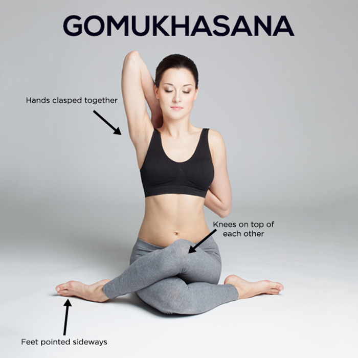
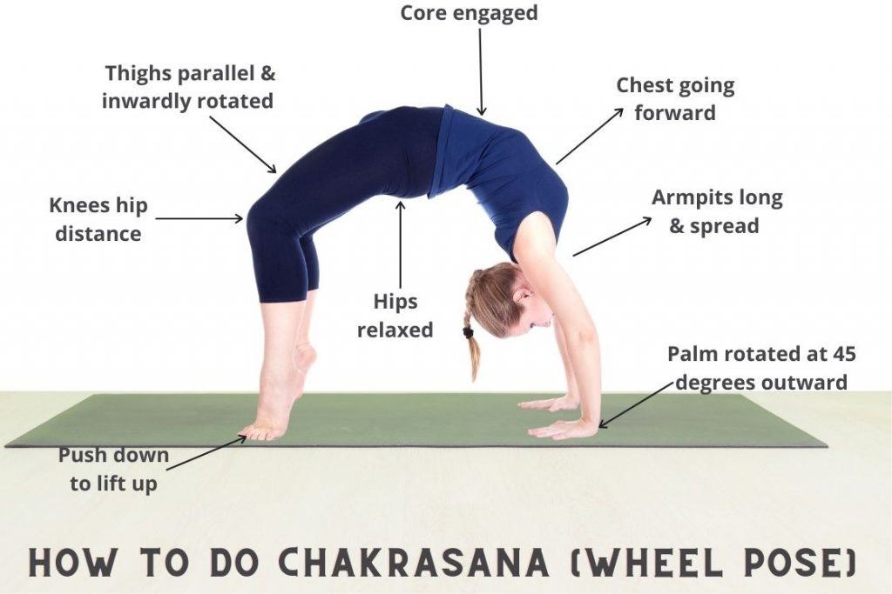
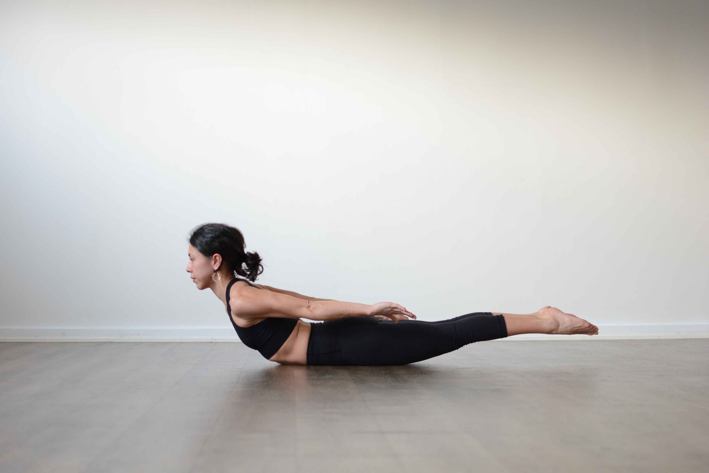
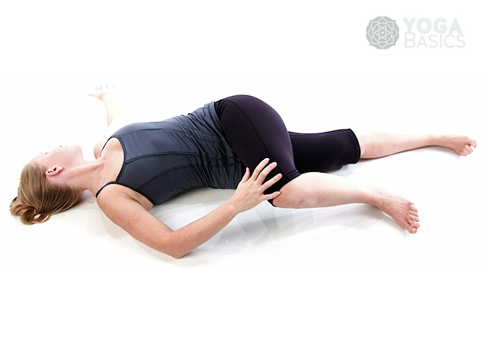

YOGA
Ideal Way Of Life
Yoga is a systematic practice of physical exercise, breath control, relaxation, diet control, and positive thinking and meditation aimed at developing harmony in the body, mind, and environment. The practice entails low-impact physical activity, postures (called asanas), breathing techniques (pranayama), relaxation, and meditation. Most people are familiar with the physical poses or yoga positions but don't know that yoga involves so much more. Some yoga postures have been shown below which helps to cure the diseases effectively.
YOGA FOR HEALTHY HEART
Utthita Trikonasana

Paschimottanasana
Gomukhasana
YOGA FOR HEALTHY KIDNEY
Vajrasana
Chakrasana
YOGA FOR HEALTHY LIVER
Shalabasana
Adomukhi Svanasana

YOGA TO CURE DIABETES
Folded leg Lumbar stretch
Dhanurasana
Paschimottanasana
YOGA TO CURE PNEUMONIA
Savithri asana

Kapal Bhati